5 Kartlegging
I denne delen viser vi hvordan man kan bruke QField til å kartlegge i prosjekter som er opprettet med programtillegget “Natur i Norge”-kartlegging. Det er også mulig å bruke QGIS for feltkartlegging. Dersom du trenger veiledningsmateriale for kartlegging i QGIS kan du bruke følgende linker:
..
5.1 Åpne prosjekt i QField
Åpne QField. Det finnes to måter man kan åpne prosjekter i QField. I denne veiledningen viser vi hvordan prosjektet kan åpnes via den lokale harddisken.

5.2 Kartvinduet i QField
Du vil nå se følgende på skjermen:
A. Kartvinduet
Her kan du utforske kartlagene ved å navigere, zoome og redigere
B. Menyknapp
Ved å trykke på denne kan du skru på redigering, synligjøre, endre på gjennomsiktighet, zomme til kartlag, velge kartlag som skal være aktive
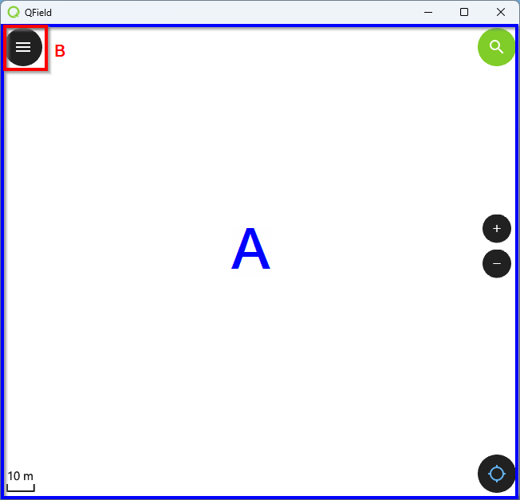
5.3 Synliggjøre kartlag
5.3.2 Klikk på øyesymbolet ved siden av kartlaget du ønsker å synliggjøre (f.eks. Nibcache_UTM32_EUREF89_v2)
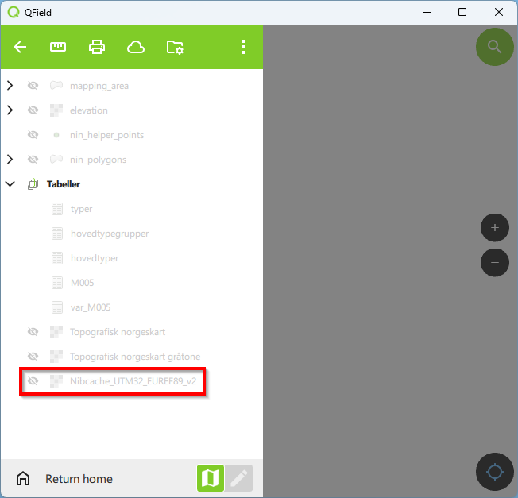
Kartlaget er nå synliggjort, indikert med at øyesymbolet ved siden av kartlaget er markert.
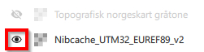
Om kartlaget ikke dukker opp i kartvinduet kan det være fordi du ikke har navigert til området hvor kartlaget befinner seg. Dette kan du gjøre ved å bruke funksjonen for å zoome til kartlag.
5.7 Redigere kartlag
 Kartlaget har ingen registrerte polygoner og det vil derfor ikke skje noe i kartvinduet ennå.
Kartlaget har ingen registrerte polygoner og det vil derfor ikke skje noe i kartvinduet ennå.5.7.2 Slå på redigeringsmodus
5.7.2.1 Klikk på kartlaget du ønsker å redigere (f.eks. nin_polygons) slik at knappen lyser grønt
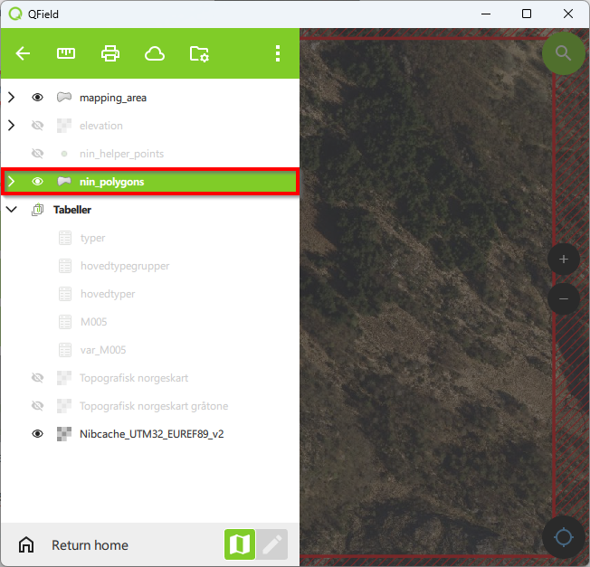
5.7.3 Utfigurér ny polygon
5.7.3.1 Klikk i kartvinduet for å lage et hjørnepunkt for polygonen. Merk at du må unngå å flytte musepekeren samtidig som du klikker for å lage et hjørnepunkt.
5.7.3.2 Når du utfigurerer en polygon og du oppretter en hjørnekoordinat ved en feil har du muligheten til å angre ved å klikke på (-).
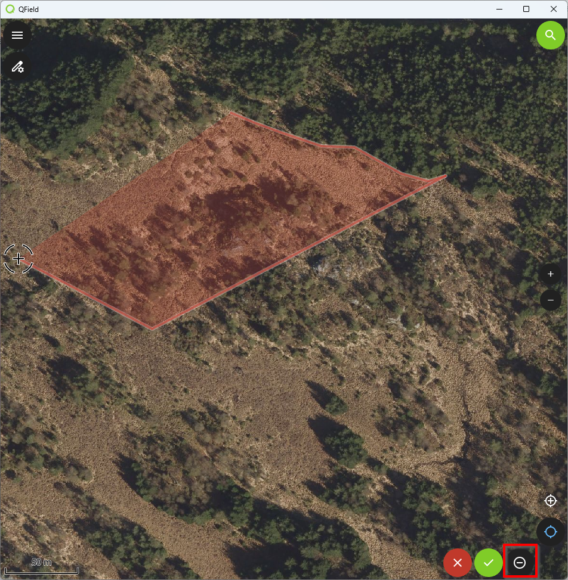
5.7.4 Registrer polygon
5.7.4.1 Registreringsskjemaet
I registreringsskjemaet kan du velge hovedtypegruppe, hovedtype, kartleggingsenhet og hvor mye av polygonen som utgjøres av den registrerte kartleggingsenheten. Du kan også legge til eller ta et foto. Registreringsskjemaet inneholder også informasjon om polygonens areal, typesystem, variabler, og polygonens påskrift som ikke kan redigeres.
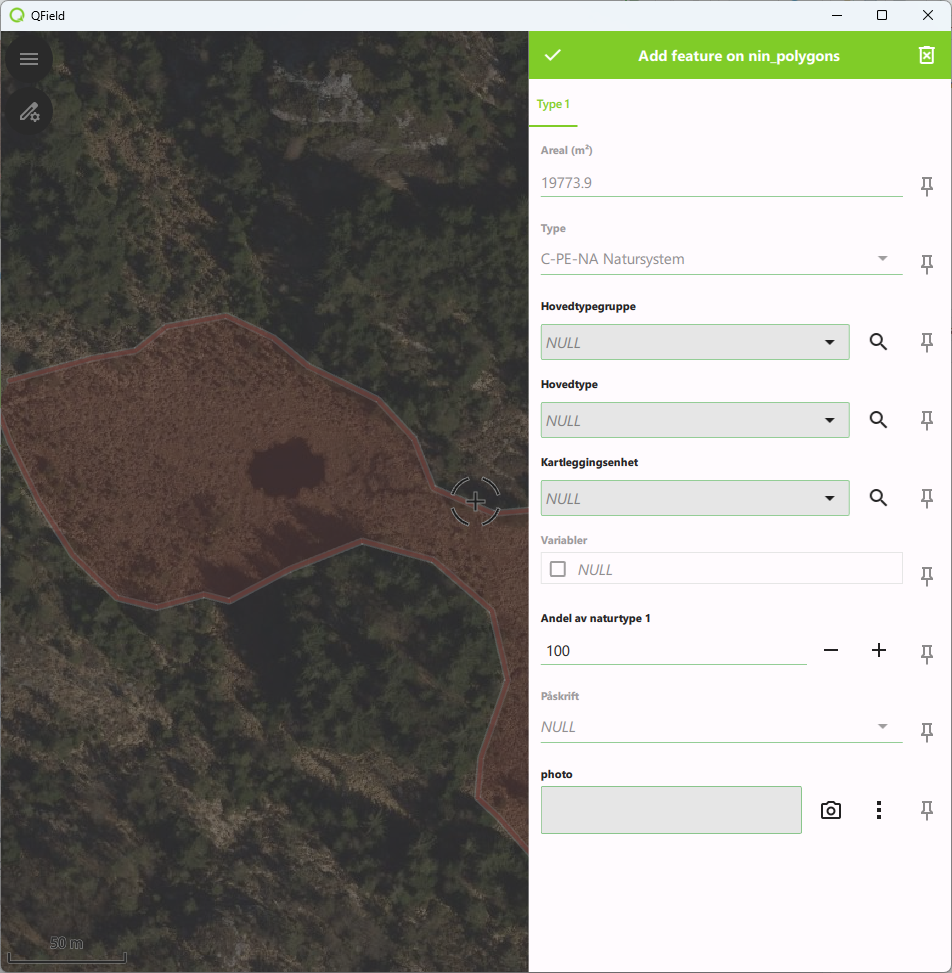
5.7.4.2 Minsteareal og minstebredde
Dersom polygonen har et mindre areal enn det som er anbefalt i kartleggingsveilederen for den valgte kartleggingsmålestokken vil det dukke opp en advarsel i feltet Areal. Det vil også dukke opp oransj tekst med påskriften Expression constraint. Merk at dette bare er en advarsel, og at det likevel er mulig å utfigurere polygoner under minstearealet.
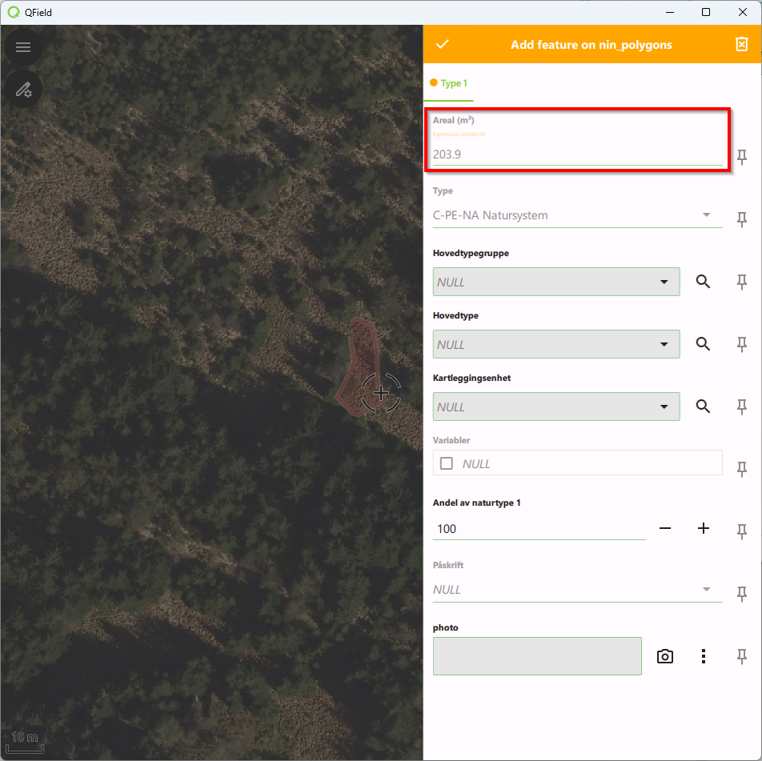
Det finnes også retningslinjer for anbefalt minstebredde for polygoner. Det vil ikke dukke opp noen advarsel om en utfigurert polygon er smalere enn dette. For å beregne tykkelsen på polygoner må man derfor bruke målestokken i kartvinduet eller andre hjelpemidler. Her er en oversikt over anbefalt minsteareal og minstebredde i ulike kartleggingsmålestokker og for ulike hovedtypegrupper:
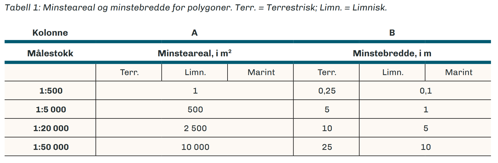

5.7.4.4 Velg hovedtypegruppen som du vil registrere polygonen som
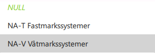
Her kan du velge mellom hovedtypegruppene som du valgte når du opprettet prosjektet.
5.7.4.8 Velg kartleggingsengheten som du ønsker å registrere polygonen som
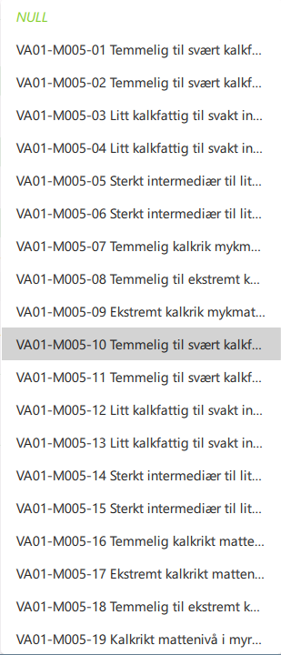
Følgende informasjon vil nå vises i registreringsskjemaet:
A. Kartleggingsenhetens plassering langs relevante lokale miljøgradienter
B. Påskriften som vil brukes til å merke polygonen
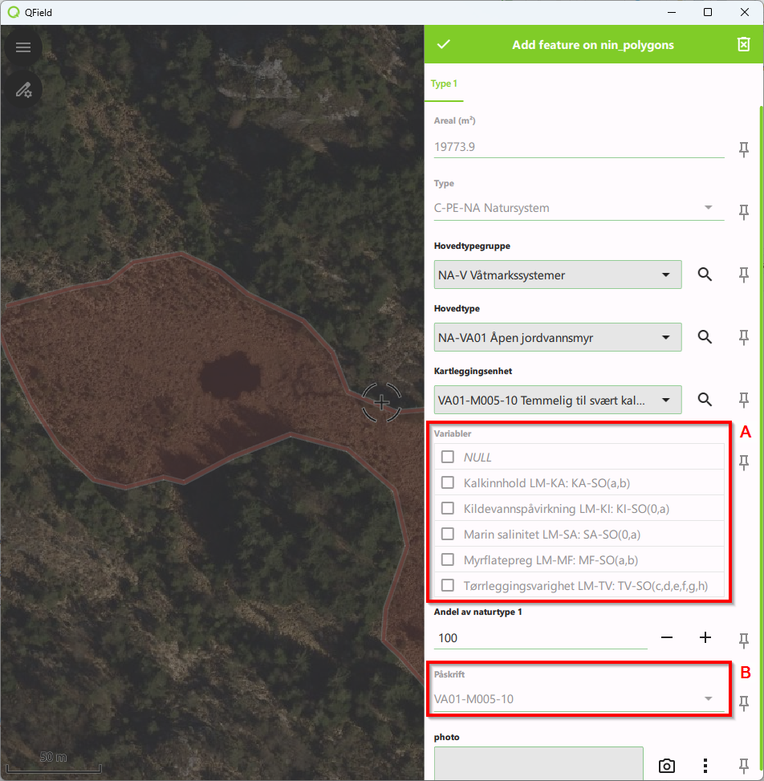
Merk at tilsvarende informasjon gis av NiN-feltveilederen.
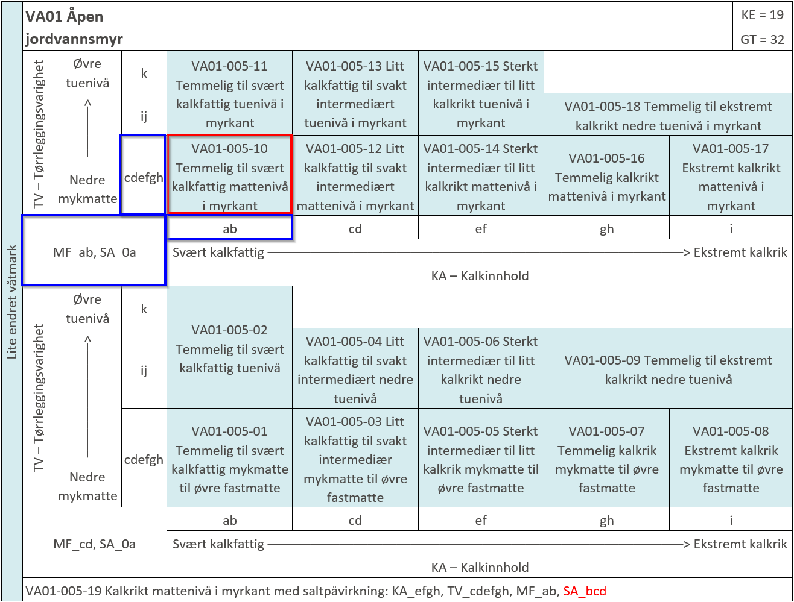
5.7.4.9 Klikk i feltet for å skrive hvor mye av polygonen som dekkes av den valgte naturtypen.
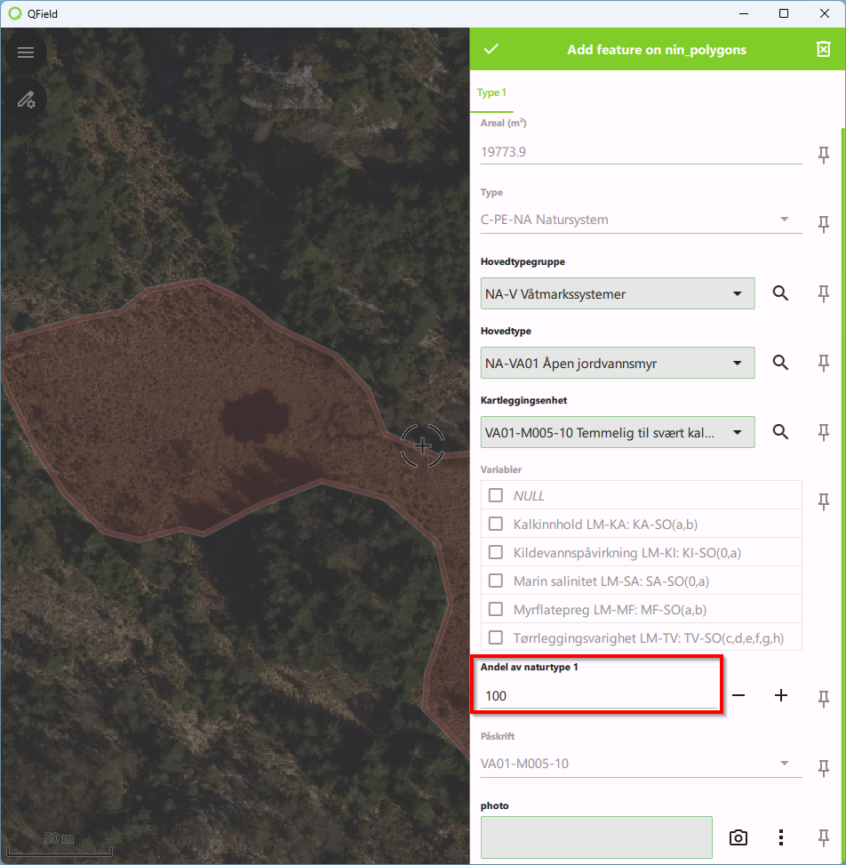
Bruk (+) og (-) ved siden av feltet for å endre andelen med 10 %. Merk at kartleggingsenheten som registreres må dekke minst 50 % av arealet.
5.7.4.12 Registrer ekstra kartleggingsenhet(er)
Dersom kartleggingsenheten dekker mindre enn 100 % av polygonens areal, må du registrere minst én ekstra kartleggingsenhet som dekker restarealet. Altså må kartleggingsenheten(e) dekke til sammen 100 % av arealet.

5.7.4.12.2 Klikk på False under sammensatt for å velge at polygonen skal representeres som en sammensatt polygon
5.7.4.12.3 Klikk på False under mosaikk for å velge at polygonen skal representeres som en mosaikkpolygon
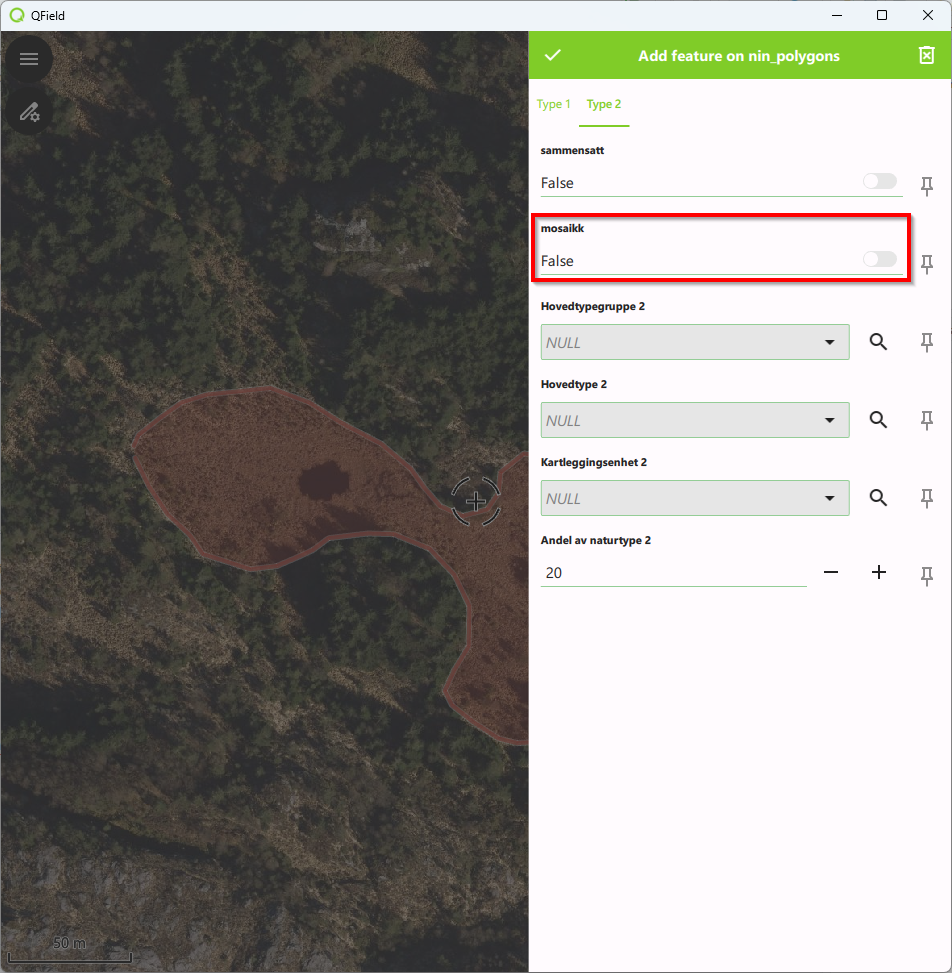
5.7.4.12.4 Velg hovedtypegruppe, hovedtype, kartleggingsenhet og andel av polygonen som dekkes av kartleggingsenheten for kartleggingsenhet 2 som vist ovenfor
Hvis det gjenstår 20 % eller mer areal etter at kartleggingsenhet 1 og kartleggingsenhet 2 er registrert må det legges til en tredje kartleggingsenhet på samme måte som for kartleggingsenhet 2. Merk igjen at alle de registrerte kartleggingsenhetene må dekke til sammen 100 %. Altså vil kartleggingsenheter som dekker mindre enn 20 % ikke bli registrert.
5.7.5 Angre
Vi vil nå vise hvordan man angrer forrige redigering. Vi utfigurerer en ny polygon for å demonstrere.
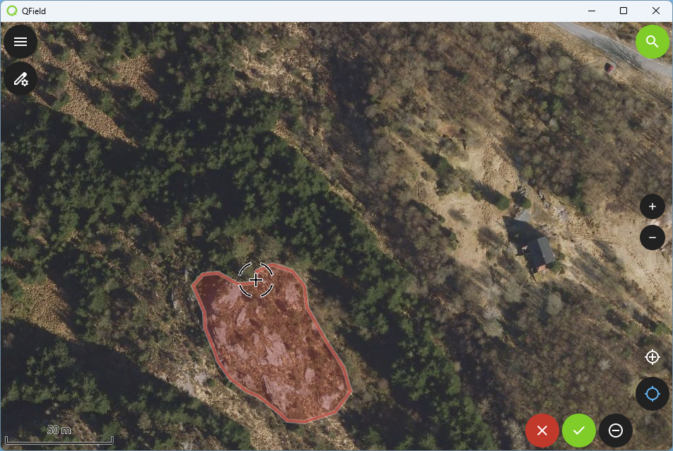 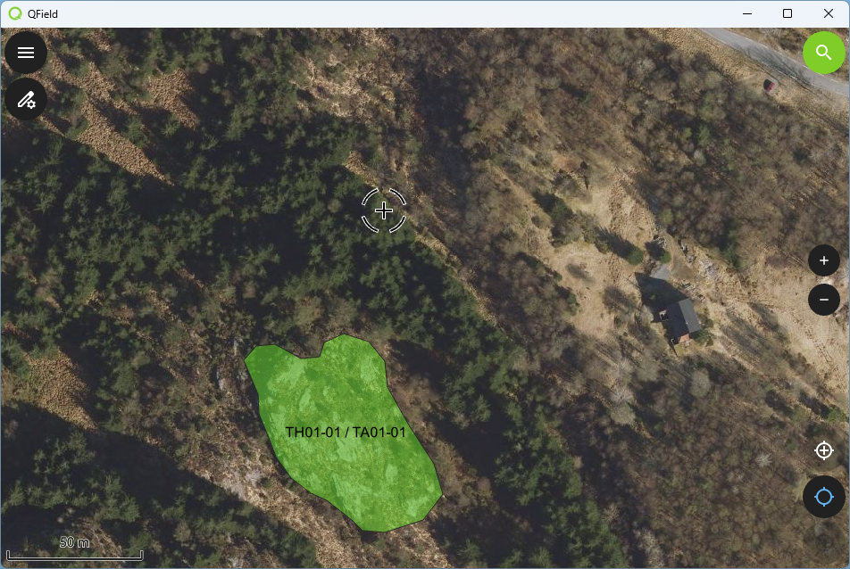

5.7.7 Utfigurer og registrer nye polygoner
For å forhindre overlappende polygoner vil nye polygoner som utfigureres automatisk klippes mot de eksisterende polygonene. Du kan derfor trygt opprette hjørnekoordinater innenfor en allerede eksisterende polygon. Det samme vil skje om du utfigurerer en polygon rundt en annen.
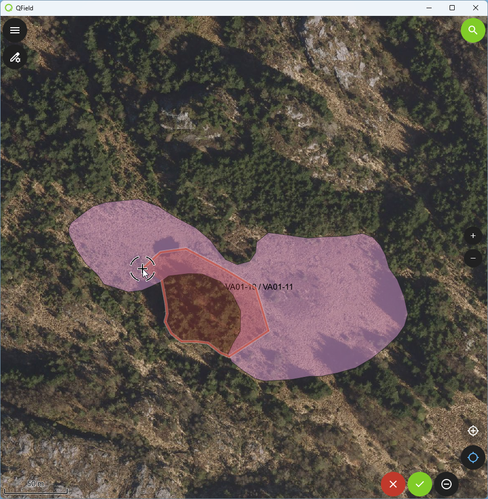
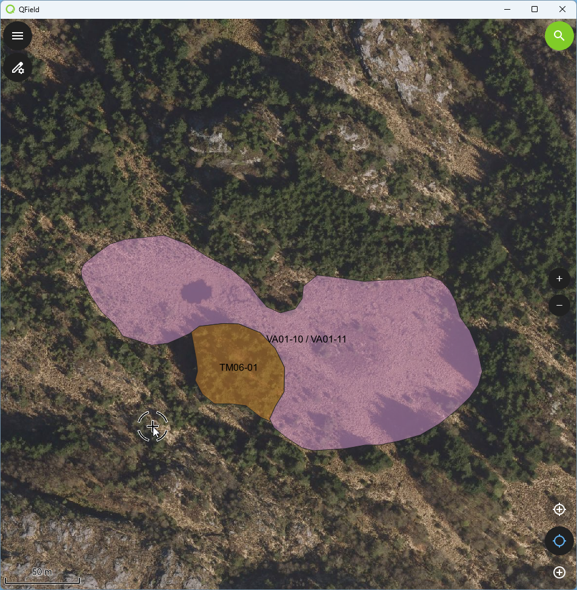
5.7.8 Rediger utfigurering til eksisterende polygoner
5.7.8.1 Redigere hjørnekoordinater
5.7.8.1.1 Hold inne venstre museknapp for å markere en polygon du vil redigere
Den markerte polygonen vil nå lyse gult.
5.7.8.1.11 Klikk igjen når du har flyttet musepekeren dit du vil at hjørnekoordinaten skal opprettes

5.7.8.2 Splitte polygon
5.7.8.2.1 Hold inne venstre museknapp for å markere en polygon du vil redigere
Den markerte polygonen vil nå lyse gult.
5.7.8.3 Formforandringsverktøyet
5.7.8.3.1 Hold inne venstre museknapp for å markere en polygon du vil redigere
Den markerte polygonen vil nå lyse gult.


5.7.8.4 Utviskingsverktøy


5.7.9 Rediger attributter for eksisterende polygoner
5.7.9.1 Hold inne venstre museknapp for å markere en polygon du vil redigere
Den markerte polygonen vil nå lyse gult.
5.7.10 Slette polygoner


5.7.11 Sammensmelte polygoner
5.7.11.1 Hold inne venstre museknapp mens du holder musepekeren over grensen mellom polygonene du vil sammensmelte
De markerte polygonene vil nå lyse gult.
5.7.12 Redigeringsinnstillinger
5.7.12.1 Snappefunksjonen
For å unngå huller i kartet vil musepekeren automatisk trekkes eller snappes mot polygongrensene om du holder musepekeren i nærheten av en polygongrense. Dette vil vises ved at symbolet som forflytter seg med musepekeren trekker seg sammen. Det er mulig å slå av snappefunksjonen.

5.7.12.2 Topologisk redigering
For å unngå overlapp mellom polygonene i kartet vil polygongrenser bli flyttet sammen om man endrer på hjørnekoordinater som er felles for flere polygoner.

Denne funksjonen som kalles topologisk redigering kan slås av.
5.7.12.2.2 Klikk på symbolet for topologisk redigering for å slå funksjonen av (at det lyser grønt betyr at funksjonen er slått på)
Dersom du nå prøver å flytte en hjørnekoordinat som er felles for to polygoner vil kun grensen til den ene polygonen flyttes. Legg merke til at kun polygongrensen til én av polygonene ble flyttet.
5.7.12.3 Frihåndstegning

5.7.14 Endre gjennomsiktighet på kartlag
Endre gjennomsiktigheten på kartlagene som ønsket. Dette kan gjøre det enklere å visualisere flere kartlag samtidig.
5.7.15 Registrere punkter
Sørg for at redigeringsmodus er på (se kapittel 5.7.2) og at du redigerer i riktig kartlag.